{kind=link}
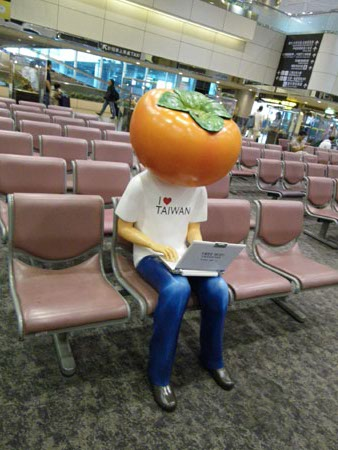
というわけで、台湾到着。 柿男子がお出迎え。WiFiの広告大使（？）のよーだけど。 柿って台湾では縁起のよい象徴のひとつみたい。でも、これはどーなんだろか。 なんだか一日中フリーのWiFiスポットでネットをしている気の毒な男のコに見えちゃう！ ほら！そこに可愛い台湾女子がいるのに！って{kind=link}
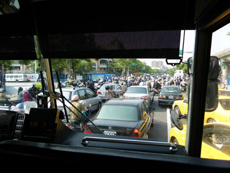
そんなこんなでリムジンバスに乗って、台北市内に。 バスやすいー。300円ぐらい。日本だと羽田から同距離ぐらいだと1200円ぐらいとられるよー。 でも冷房効いててさむい。 ちょうど、朝のラッシュアワー時で、大混雑の台湾ラッシュを目の当たりにすることができる。 有る意味ラッキー。 バイクはみっちり道路に押し込まれているかんじ。{kind=link}
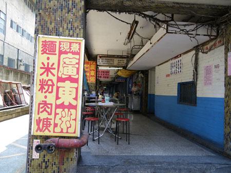
で、ホテル到着。 の、ホテル裏。店の中には結局行かなかったけど、ゆるーい台湾風情なお店が並んでいて一度この空間に足を踏み入れてしまったら、台北マジックにかかって日本に帰れなくなっちゃいそう。 ぼうっと、一日に何食も軽い食事をとって（やすいし）（おいしいし）ぬるーい風と、ささやかな日陰と。{kind=link}
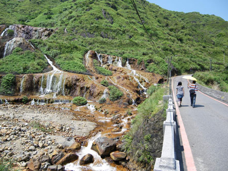
てなわけで、観光。 どういうわけか、金山に向かう。 途中、「うおおおおああああぁぁ」っていうぐらい魅力的な廃墟があったのだけど（金山工場の宿舎だったか、施設だったか）「ココむかし金がトレタ、もうヒトいないトコね、ツギいく」とガイドの運転手さんにスルーされ（止めてもらってもよかったんだろうけど、パリからのフライト直後だったので、その気力なく…） で、重金属がふくまれた水が流れる金山近くの川で一休み。{kind=link}
{kind=link}
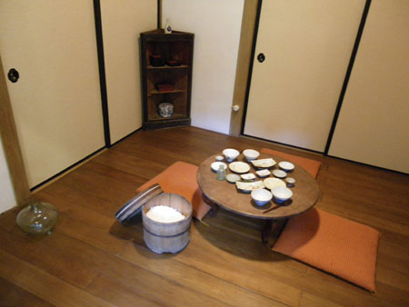
この金山は日本人の技術者が多く関わっていたとゆーことで、日本家屋が見所となっているとのこと。{kind=link}
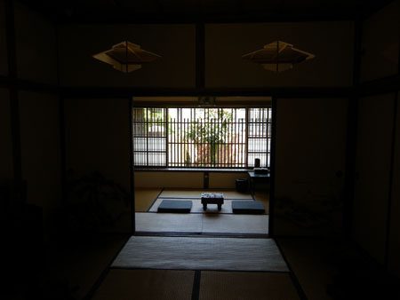
ボロボロだった家屋をなんだか有識者やら専門家がチームを組んで再建したらしい。 なんだかすごい熱意だわ。{kind=link}
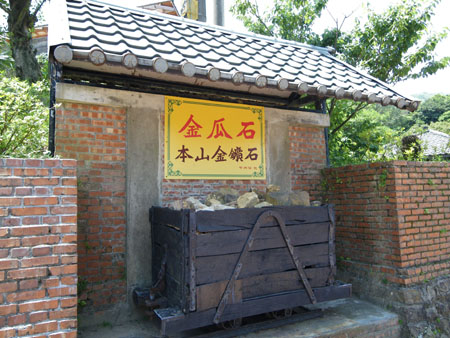
あ、そうそう「金瓜石」ってとこでした。 台湾人の観光スポットみたい。日本人は…見なかったような…{kind=link}
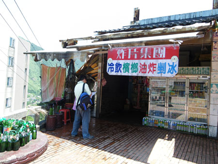
途中で、飲み物やら日傘やら食べ物やらお弁当やらを売っているのだけど、いちいち看板とかが面白い。まー、外国人が日本に来ているのと同じ感覚なんだろーなー。ヨーロッパでは「おっ！良い感じ！」ってシャッターを向けることが多いけど、台湾では「面白い！」ってシャッターを向けることが多かった。アジアとヨーロッパのちがい。{kind=link}
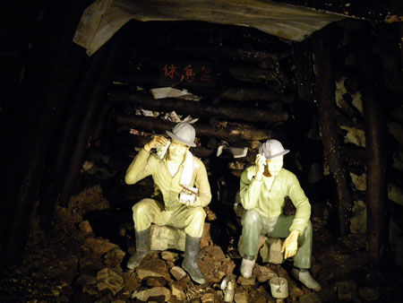
ヘルメット被って、金鉱内探検。{kind=link}
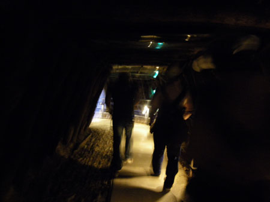
台湾の男子高校生軍団に囲まれる。 んでもって、再びタクシーに乗って、次の目的地につれていかれる。 「ナカおもしろカタですか？」 まーまーだったけど暑かタヨ！{kind=link}
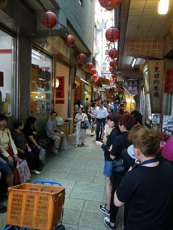
次は「九分」 千と千尋の神隠しの舞台参考のひとつとなっている場所。 食べ物だらけの竹下通り＆スペイン坂といったらいいよーな。{kind=link}
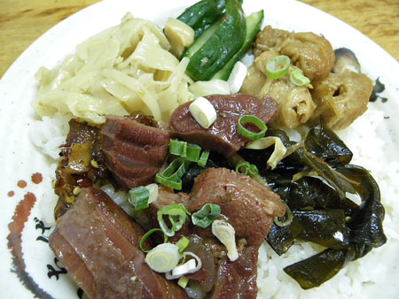
とにもかくにも美味しそうな香りが右から左から上から下から漂うので、どうにもこうにも抑えきれずにお店に入る。千と千尋のオープニングで、豚になっちゃったオトーサンとオカーサンが食べ物に手を出してしまったのも、これならしかたがないヨ！ なんだかわかんないけど、美味しいよ！{kind=link}
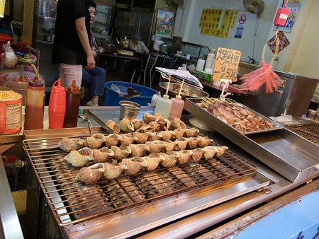
バイガイ焼き？{kind=link}
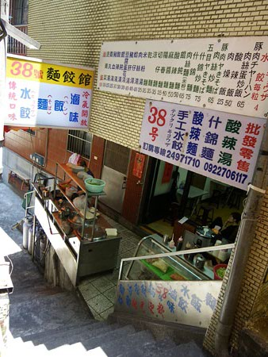
入ってみたいお店がたくさん。スペア胃袋が欲しい！{kind=link}
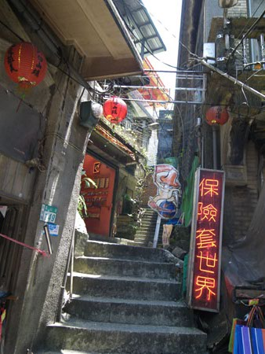
なんとなく映画に出てきたトコっぽい雰囲気が増えてきた。{kind=link}
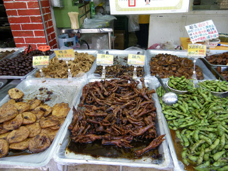
鶏の足とかも甘辛そうで美味しそう。 あぁ！臭豆腐たべるの忘れてた！しもた！{kind=link}
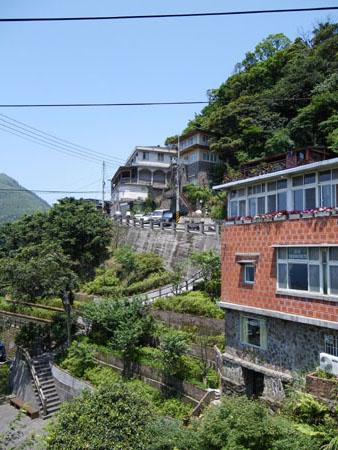
こんな感じに崖にそって家やら店やら。 先には海も見えて絶景。{kind=link}
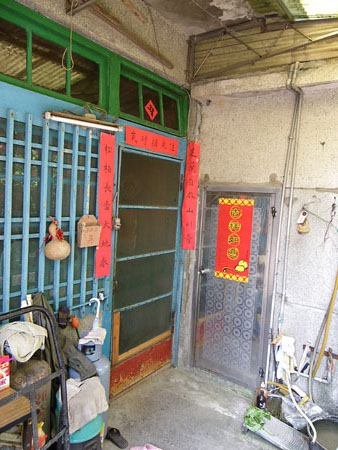
で、フラフラしてたら道にまよって… 湯婆婆のところで働かされたとゆーのはじょうだんで、{kind=link}
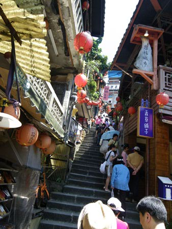
一番有名ドコの坂階段を下りて{kind=link}
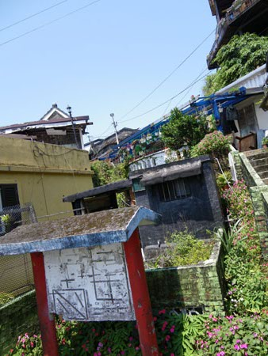
タクシーの運転手さんが待つ坂の下に無事帰還することができたのでしたー。 どこで迷ったんだろうか… ホントなら、ここから故宮博物館の予定なのだけど、キャンセルをして、小龍包の美味しい店につれて行ってもらうことに。 台北市内までは再び車内で爆睡。あー楽だー。台北タクシー{kind=link}
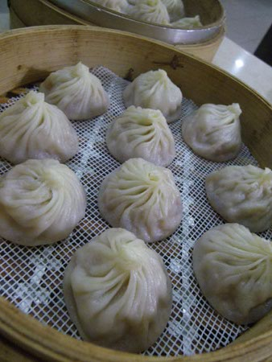
と、このツアーでおすすめ（？）の小龍包店の前で降ろされて 「ココがイチバンオススメね！オイシイ！イチジカンしたらまたクルネ！」ってがーっとタクシーが出て行って、店を見たら休憩時間中だった。 えー！運ちゃん！ちょっとー！ しかたがなしに、ふらふら街を彷徨っていたとこに、鼎泰豊の次くらいに有名な京鼎楼を発見。 こちらも休憩時間間近だったけど、どうにか入れてもらって、小龍包を注文！ あー！これこれ！ぷっちりジューシー！ でも好みはやっぱり鼎泰豊かなー。あいかわらずの大繁盛店で行列必至らしいけど…{kind=link}
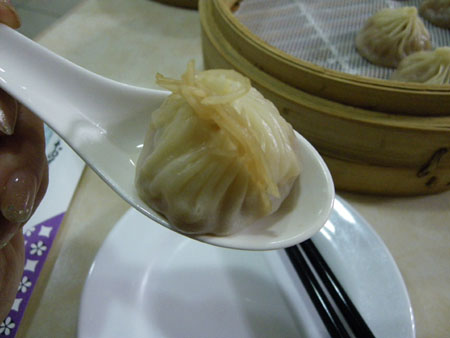
もういくらでもはいっちゃうのが小龍包の謎。 豚になっちゃうオトーサンとオカーサンの気持ちが分かるの。{kind=link}
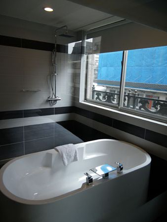
そんなわけで突貫ツアーに完敗して、ちょいとはやめにチェックイン。 ナウでヤングなシティホテルでびっくりしたよ！ 台湾のテレビは言葉がわかんなくてもなんとなく面白い。 なぜだか加護ちゃんが出てきてカルボナーラ作っている番組があった。ああ彷徨ってるなー{kind=link}
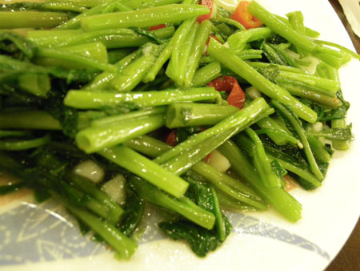
で、なんだかんだでいつのまにやらお腹は空くのがフシギ。 ホテル近くのにぎわっているお店に入ってまずは青菜炒め。 香菜がたくさん。いろんな青菜が入っていて＆魅惑の味の素風味もまたたまらんです！{kind=link}
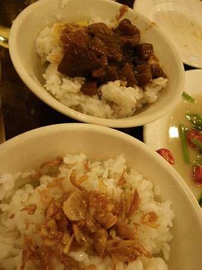
ご飯2種。 小さな小鉢にふたつ。駄菓子みたいな値段で美味しいったら！{kind=link}
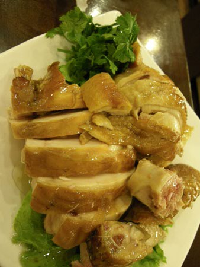
鶏の薫製冷製。あー香ばしいよー。脂がおいしいよー。香菜と一緒に！あー！ バドガールならぬ、ミネガール。 注いでくれたり、お皿片付けてくれたり。{kind=link}
{kind=link}
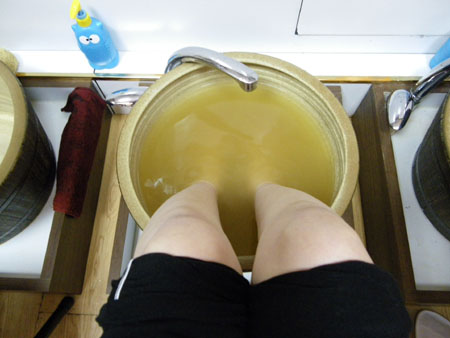
んで、締めは足裏マッサージ！ ただいま薬湯に足をつけているとこ。 痛いのヤだから柔ーくやって！ってお願いしても痛くて… 「痛いー！」って言ったら「んフフ。ココ胃ネ！食べ過ぎ！」って！そんなオチかー！